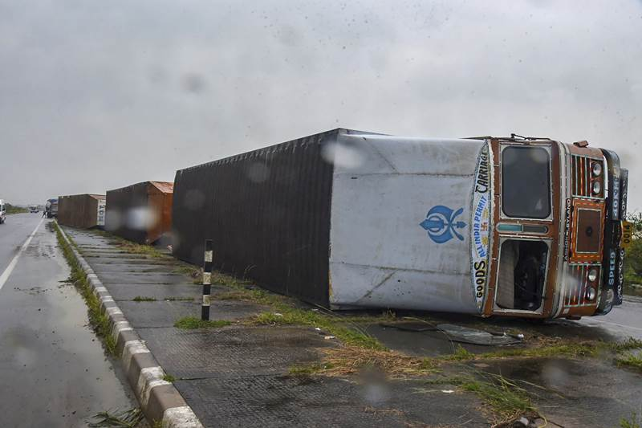
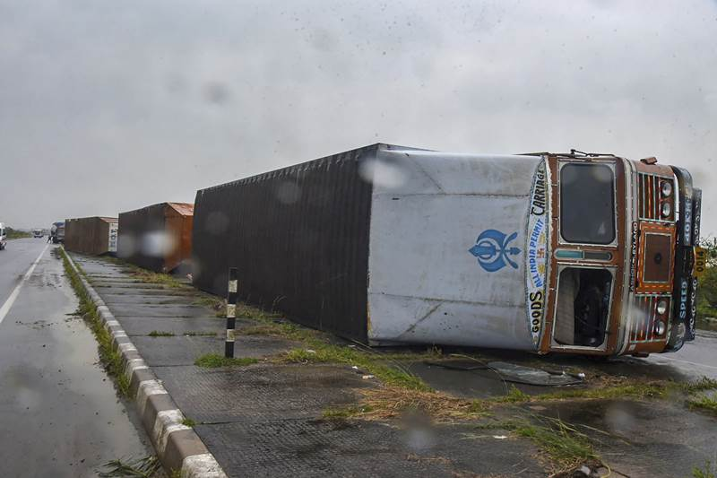
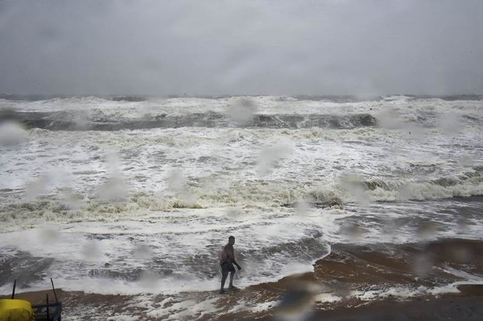
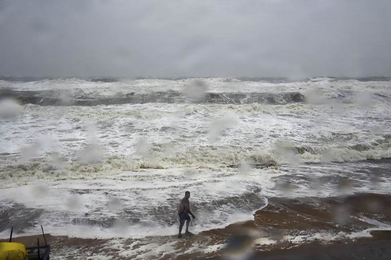

CURRENT DISASTERS IN INDIA
Natural disasters in India, many of them related to the climate of India, cause massive losses of life and property. Droughts,
flash floods, cyclones, avalanches,
landslides brought on by torrential rains, and snowstorms pose the greatest threats.

KERALA FLOODS
Beginning on 15 August 2018, severe floods affected the south Indian state of Kerala, due to unusually high rainfall during the monsoon season. It was the worst
flooding in Kerala in nearly a century.Over 483 people died, and 15 are missing.At least a million people were evacuated, mainly from Chengannur , Pandanad,
Edanad, Aranmula, Kozhencherry, Ayiroor, Ranni, Pandalam, Kuttanad, Aluva, and Chalakudy, N.Paravur, Chendamangalam, Eloor and few places in Vypin Island. All 14 districts
of the state were placed on red alert. According to the Kerala government, one-sixth of the total population of Kerala had been directly affected by the floods and
related incidents. The Indian government had declared it a Level 3 Calamity, or "calamity of a severe nature". It is the worst flood in Kerala after the great flood of
99 that happened in 1924.


The worst affected areas of the state were Wayanad, Pathanamthitta, Ernakulam, Thrissur, Kochi, Malappuram, Kozhikode, Kannur, Palakkad, Alappuzha districts.
Although the rain had subsided, several parts of Pathanamthitta, Ernakulam, and Thrissur districts are still inundated, where marooned people waited for rescue boats
or helicopters, as well as water and medicine.

CYCLONE TITLI
The 2018 North Indian Ocean cyclone season is an ongoing event in the annual cycle of tropical cyclone formation. The North Indian Ocean cyclone season has no official
bounds, but cyclones tend to form between April and December, with the two peaks in May and November. These dates conventionally delimit the period of each year when most tropical
cyclones form in the northern Indian Ocean.

In all, eight districts - Ganjam, Gajapati, Khurda, Puri, Jagatsinghpur, Kendrapara, Bhadrak and Balasore - have been affected by very severe cyclone Titli. Cyclone 'Titli'
triggered heavy to very heavy rainfall in Ganjam, Gajapati and Puri districts of Odisha, while damage of hutments and asbestos-roofed houses, street lights, road blockade
due to uprooted trees were reported from Ganjam. Road communication between Paralakhemundi and Mohana and some other block headquarters in Gajapati had been
disrupted under the impact of the cyclone.
 

 

DUST STORMS
From 2 to 3 May 2018, high-velocity dust storms swept across parts of North India and more than 125 people died and over 200 injured.In Uttar Pradesh, 43 died in the
city of Agra and at least 30 died elsewhere in the state. In neighboring Rajasthan, at least 35 people died and over 200 were injured after winds downed more than 8,000 electricity
poles and uprooted hundreds of trees. Storms are not uncommon in the region; however, because these storms occurred at night and with greater wind
speeds than average, the death toll was higher than usual.
Indian authorities have warned citizens they are facing five days of isolated thunderstorms and high winds, after dangerous weather left more than 114 people dead across
northern parts of the country.
Major affected areas are the districts of Rajasthan, Uttar pradesh, Gujrat and areas of delhi.Officials stated that the storm was more devastating than prior dust storms
as the stronger weather system carried more debris which caused more damage to homes and buildings, and because it struck at night, most were asleep and were unable to take
precautions, leaving many killed or injured by falling structures.